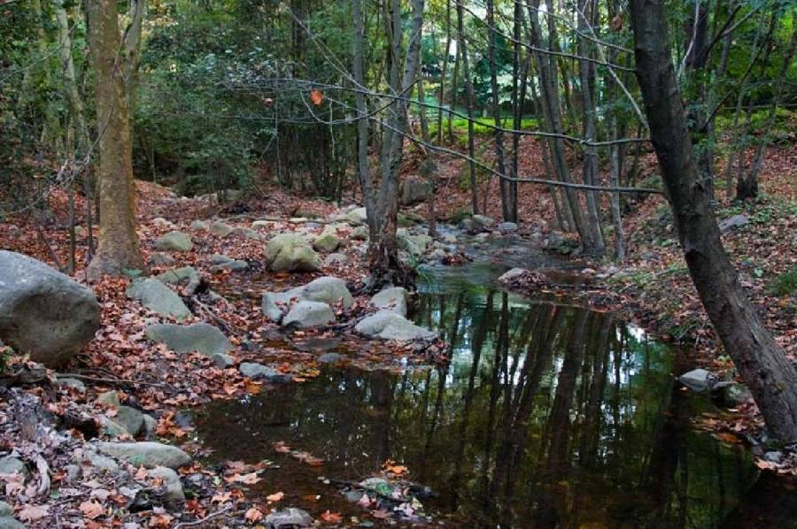

Ruta · Gualba
Amb aquesta passejada per la frontissa del poble de Gualba , amb la riera i el seu passeig com a element central, volem donar a conèixer valors paisatgístics i elements de patrimoni cultural que…